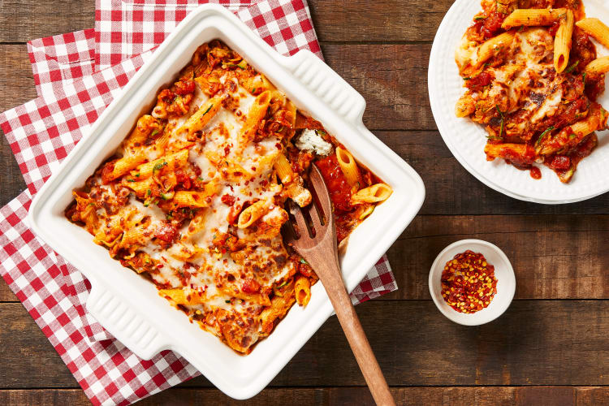

Zucchini Pomodoro Penne Bake

Description
Penne and zucchini layered with creamy ricotta and rich marinara sauce,
topped with mozzarella and baked to a light crust.
10 minutes to prep; 35 minutes to cook.
Ingredients
- Zucchini, 1
- Yellow Onion, 1
- Roma Tomato, 1
- Penne Pasta, 6 oz
- Marinara Sauce, 14 oz
- Italian Seasoning, 1 Tbsp
- Ricotta Cheese, 1 oz
- Mozzarella Cheese, 1/2 cup
- Chili Flakes, 1 tsp
- Olive Oil, 2 tsp
- Sugar, 1 tsp
- Butter, 1 Tbsp
- Salt
- Pepper
Steps
-
Adjust rack to top position and preheat oven to 450 degrees. Bring a
medium pot of salted water to a boil. Wash and dry produce. Halve, peel,
and dice half the onion. Finely dice tomato. Trim zucchini, then grate
on the largest holes of a box grater.
-
Once water is boiling, add penne to pot. Cook, stirring occasionally,
until almost al dente, 8 minutes (it'll finish cooking in step 6). Drain
penne. (Keep empty pot handy for step 5.)
-
Meanwhile, heat a drizzle of olive oil in a large pan over medium-high
heat. Add diced onion, tomato, and a pinch of salt. Cook, stirring
occasionally, until onion is softened, 4-6 minutes. • Stir in marinara,
zucchini, 1/2 tsp Italian Seasoning, 1/4 cup water, 1 tsp sugar, and a
big pinch of salt. (You'll use more Italian Seasoning in the next step.)
Bring to a simmer; cook, stirring, 3 minutes more. Turn off heat.
-
While sauce simmers, in a medium bowl, combine ricotta, 1/2 tsp Italian
Seasoning, and a drizzle of olive oil. (Use the rest of the Italian
Seasoning as you like.) Season with salt and pepper.
-
Add drained penne, sauce, and 1 TBSP butter to pot used for pasta.
Season with salt and pepper; stir to thoroughly combine. Spread out half
the pasta mixture in an 8-by-8-inch baking dish. Using a tablespoon,
dollop pasta mixture with herbed ricotta. Top with remaining pasta
mixture, then sprinkle with mozzarella.
-
Cover baking dish with foil. (TIP: Coat inside of foil with nonstick
spray first to prevent sticking.) Bake pasta on top rack for 10 minutes,
then remove from oven; discard foil. Heat broiler to high. Broil until
cheese is lightly browned, 4-5 minutes. TIP: Watch carefully to avoid
burning. Let cool slightly; top with chili flakes if desired. Divide
between plates and serve.